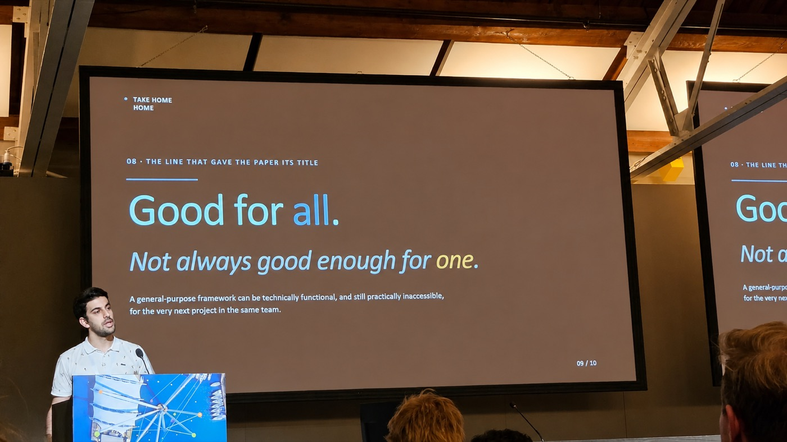

Two years ahead, will this person get worse?
Real patient records. Federation simulated Led it. 2025Privacy is supposed to cost you. Keep the data apart, get a worse model. That much is true, and the bottom bar is what it costs. The top bar is what you get back. All three answer the same question, on the same patients. The score is area under the curve, where 0.50 is a coin toss and 1.00 is perfect.
How it was run
These records were already gathered into one research registry. I split them back into country groups and made each group train on its own, passing only the model between them. So it measures what federation does to the score, not a live federation.
0.50, a coin toss1.00, perfect
Standard deviations were 0.0019, 0.0012 and 0.0019, across ten repetitions. All three rows are the paper, table 1.
What the top bar beats, and by how much. Take the same setup and switch the country by country fitting off. Against that, it is 7.2% better at telling apart who will get worse from who will not. And 31% better at finding them without flagging half the group. In the usual names, ROC-AUC and AUC-PR. Against the middle bar, everything pooled in one place, it is 3.8% better. That switched off version is not the bar at the bottom.

Measured on
The decision I owned. Stop training one model for everyone. Fit each country instead, with a network built to carry a shared half and a private half at once. I conceived it, ran it, and wrote it. First author in a 73 person collaboration.
The middle bar is the ceiling everyone assumes. It is not. And plain federated averaging, the bottom bar, really is worse than pooling, which is why the field keeps saying privacy is expensive.
One caveat I will make myself, before you make it for me
The pooled model is a single global model. The winner is fitted to each country. So what won here is that fitting, not the sharing on its own. What the sharing did was make the fitting possible without gathering the records first. That is the claim I stand behind, and it is the more useful one. The next thing to prove is that it holds when the groups are real and separate, not split apart after the fact. Pirmani et al., npj Digital Medicine 8(478), 2025. Code is public.